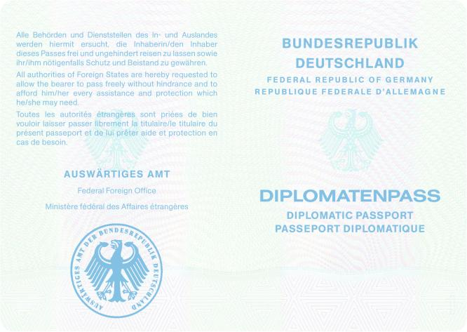
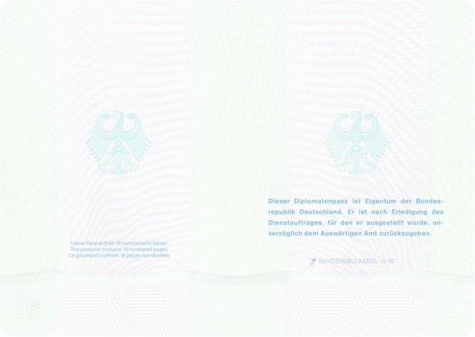
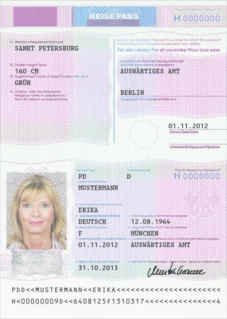

PassV
Ausfertigungsdatum: 19.10.2007
Vollzitat:
"Passverordnung vom 19. Oktober 2007 (BGBl. I S. 2386), die zuletzt durch Artikel 1 der Verordnung vom 12. April 2024 (BGBl. 2024 I Nr. 125) geändert worden ist"
| Stand: | Zuletzt geändert Art. 1 V v. 12.4.2024 I Nr. 125 |
(+++ Textnachweis ab: 1.11.2007 +++)Die V wurde als Artikel 1 der V v. 19.10.2007 I 2386 vom Bundesministerium des Innern im Benehmen mit dem Auswärtigen Amt, mit Zustimmung des Bundesrates erlassen. Sie tritt gem. Art. 4 Satz 1 dieser V am 1.11.2007 in Kraft.
| § 1 | Muster des Reisepasses; Änderung von Daten |
| § 2 | Muster des vorläufigen Reisepasses; Änderung von Daten |
| § 3 | Muster des amtlichen Passes; Änderung von Daten |
| § 4 | Lichtbild |
| § 5 | Ausgabe und Versand des Passes |
| § 6 | Befreiung von der Passpflicht |
| § 7 | Passersatz |
| § 8 | Muster der amtlichen Ausweise als Passersatz |
| § 9 | Lichtbilder für den Passersatz |
| § 10 | Gültigkeitsdauer des Passersatzes |
| § 11 | Andere Regelungen für einen Passersatz |
| § 12 | Ausstellung |
| § 13 | Gültigkeitsdauer |
| § 14 | Rückgabe |
| § 15 | Gebühren |
| § 16 | Erstattung von Auslagen |
| § 17 | Ermäßigung und Befreiung von Gebühren |
| § 18 | Übergangsregelung |
| 1. | für die Ausstellung | ||
| a) | eines Reisepasses nach Anlage 1 an Personen, die das 24. Lebensjahr vollendet haben, | 70 Euro, | |
| b) | eines Reisepasses nach Anlage 1 an Personen, die das 24. Lebensjahr noch nicht vollendet haben, | 37,50 Euro, | |
| c) | eines Reisepasses mit 48 Seiten nach Anlage 1a zusätzlich zu der in Nummer 1a und 1b bestimmten Gebühr | 22 Euro, | |
| d) | eines Reisepasses nach Nummer 1a bis 1c im Expressverfahren zusätzlich zu den dort bestimmten Gebühren | 32 Euro, | |
| e) | eines vorläufigen Reisepasses | 26 Euro, | |
| f) | eines Ausweises für Binnenschiffer und deren Familienangehörige für die Flussschifffahrt auf der Donau (§ 7 Absatz 1 Nummer 2) | 16 Euro, | |
| g) | eines Ausweises, der von den Behörden und Dienststellen ausgestellt wird, die für die polizeiliche Kontrolle des grenzüberschreitenden Verkehrs zuständig sind (§ 7 Absatz 1 Nummer 7) | 8 Euro, | |
| h) | eines Ausweises, der ausschließlich zur Einreise in die Bundesrepublik Deutschland berechtigt (§ 7 Absatz 1 Nummer 8) | 8 Euro, | |
| 2. | für die Änderung eines Reisepasses oder vorläufigen Reisepasses und für die Verlängerung oder Änderung eines anderen unter Nummer 1 genannten Ausweises | 6 Euro, | |
| 3. | für die Zustellung nach § 5 Absatz 2 | 15 Euro. | |
| Reisepass (32 Seiten) | Einband |
| Reisepass (32 Seiten) | Vorsatz und Passkartentitelseite |

| Reisepass (32 Seiten) | Passkartendatenseite und Passbuchinnenseite 1 |
| Reisepass (32 Seiten) | Passbuchinnenseiten 2 und 3 |
| Reisepass (32 Seiten) | Passbuchinnenseiten 4 und 5 |
| Reisepass (32 Seiten) | Passbuchinnenseiten 6 und 7 |
| Reisepass (32 Seiten) | Passbuchinnenseiten 8 und 9 |
| Reisepass (32 Seiten) | Passbuchinnenseiten 10 und 11 |
| Reisepass (32 Seiten) | Passbuchinnenseiten 12 und 13 |

| Reisepass (32 Seiten) | Passbuchinnenseiten 14 und 15 |

| Reisepass (32 Seiten) | Passbuchinnenseiten 16 und 17 |

| Reisepass (32 Seiten) | Passbuchinnenseiten 18 und 19 |

| Reisepass (32 Seiten) | Passbuchinnenseiten 20 und 21 |
| Reisepass (32 Seiten) | Passbuchinnenseiten 22 und 23 |
| Reisepass (32 Seiten) | Passbuchinnenseiten 24 und 25 |
| Reisepass (32 Seiten) | Passbuchinnenseiten 26 und 27 |

| Reisepass (32 Seiten) | Passbuchinnenseiten 28 und 29 |

| Reisepass (32 Seiten) | Passbuchinnenseiten 30 und 31 |

| Reisepass (32 Seiten) | Passbuchinnenseite 32 und Vorsatz des hinteren Einbandes |
| Reisepass (48 Seiten) | Einband |

| Reisepass (48 Seiten) | Vorsatz und Passkartentitelseite |

| Reisepass (48 Seiten) | Passkartendatenseite und Passbuchinnenseite 1 |
| Reisepass (48 Seiten) | Passbuchinnenseiten 2 und 3 |
| Reisepass (48 Seiten) | Passbuchinnenseiten 4 und 5 |
| Reisepass (48 Seiten) | Passbuchinnenseiten 6 und 7 |
| Reisepass (48 Seiten) | Passbuchinnenseiten 8 und 9 |
| Reisepass (48 Seiten) | Passbuchinnenseiten 10 und 11 |
| Reisepass (48 Seiten) | Passbuchinnenseiten 12 und 13 |

| Reisepass (48 Seiten) | Passbuchinnenseiten 14 und 15 |
| Reisepass (48 Seiten) | Passbuchinnenseiten 16 und 17 |
| Reisepass (48 Seiten) | Passbuchinnenseiten 18 und 19 |

| Reisepass (48 Seiten) | Passbuchinnenseiten 20 und 21 |

| Reisepass (48 Seiten) | Passbuchinnenseiten 22 und 23 |

| Reisepass (48 Seiten) | Passbuchinnenseiten 24 und 25 |
| Reisepass (48 Seiten) | Passbuchinnenseiten 26 und 27 |

| Reisepass (48 Seiten) | Passbuchinnenseiten 28 und 29 |

| Reisepass (48 Seiten) | Passbuchinnenseiten 30 und 31 |

| Reisepass (48 Seiten) | Passbuchinnenseiten 32 und 33 |

| Reisepass (48 Seiten) | Passbuchinnenseiten 34 und 35 |

| Reisepass (48 Seiten) | Passbuchinnenseiten 36 und 37 |

| Reisepass (48 Seiten) | Passbuchinnenseiten 38 und 39 |
| Reisepass (48 Seiten) | Passbuchinnenseiten 40 und 41 |
| Reisepass (48 Seiten) | Passbuchinnenseiten 42 und 43 |

| Reisepass (48 Seiten) | Passbuchinnenseiten 44 und 45 |

| Reisepass (48 Seiten) | Passbuchinnenseiten 46 und 47 |

| Reisepass (48 Seiten) | Passbuchinnenseite 48 und Vorsatz des hinteren Einbandes |
| Vorläufiger Reisepass | Decke |
| Vorläufiger Reisepass | Vorsatz und Passbuchinnenseite 1 |
| Vorläufiger Reisepass | Passbuchinnenseiten 2 und 3 |
 | |
| Die Seiten 1 bis 16 und die hintere Passdecke werden am unteren Rand mit der Dokumentennummer versehen | |
| Vorläufiger Reisepass | Passbuchinnenseiten 4 und 5 |
| Vorläufiger Reisepass | Passbuchinnenseiten 6 und 7 |
| Vorläufiger Reisepass | Passbuchinnenseiten 8 und 9 |
| Seiten 8 bis 15 gleichlautend | |
| Vorläufiger Reisepass | Passbuchinnenseite 16 und Vorsatz |
| Vorläufiger Reisepass | Aufkleber Personaldaten |
| Dienstpass | Einband |

| Dienstpass | Vorsatz und Passkartentitelseite |

| Dienstpass | Passkartendatenseite und Passbuchinnenseite 1 |
![Abbildung der Passkartendatenseite und der Passbuchinnenseite 1 des Dienstpasses mit dem neuen Datenfeld „Nr. 14 [a] Doktorgrad“ und dem dort zugeordneten Datenfeld „[b] Ordens- oder Künstlername“](../normengrafiken/bgbl1_2024/j01250_0490.jpg)
| Dienstpass | Passbuchinnenseiten 2 und 3 |

| Dienstpass | Passbuchinnenseiten 4 und 5 |
| Dienstpass | Passbuchinnenseiten 6 und 7 |

| Dienstpass | Passbuchinnenseiten 8 und 9 |

| Dienstpass | Passbuchinnenseiten 10 und 11 |
| Dienstpass | Passbuchinnenseiten 12 und 13 |
| Dienstpass | Passbuchinnenseiten 14 und 15 |

| Dienstpass | Passbuchinnenseiten 16 und 17 |

| Dienstpass | Passbuchinnenseiten 18 und 19 |

| Dienstpass | Passbuchinnenseiten 20 und 21 |

| Dienstpass | Passbuchinnenseiten 22 und 23 |

| Dienstpass | Passbuchinnenseiten 24 und 25 |

| Dienstpass | Passbuchinnenseiten 26 und 27 |

| Dienstpass | Passbuchinnenseiten 28 und 29 |

| Dienstpass | Passbuchinnenseiten 30 und 31 |

| Dienstpass | Passbuchinnenseiten 32 und 33 |
| Dienstpass | Passbuchinnenseiten 34 und 35 |
| Dienstpass | Passbuchinnenseiten 36 und 37 |
| Dienstpass | Passbuchinnenseiten 38 und 39 |

| Dienstpass | Passbuchinnenseiten 40 und 41 |

| Dienstpass | Passbuchinnenseiten 42 und 43 |

| Dienstpass | Passbuchinnenseiten 44 und 45 |

| Dienstpass | Passbuchinnenseiten 46 und 47 |

| Dienstpass | Passbuchinnenseite 48 und Vorsatz des hinteren Einbandes |
| Diplomatenpass | Einband |
| Diplomatenpass | Vorsatz und Passkartentitelseite |
| Diplomatenpass | Passkartendatenseite und Passbuchinnenseite 1 |
| Diplomatenpass | Passbuchinnenseiten 2 und 3 |
| Diplomatenpass | Passbuchinnenseiten 4 und 5 |
| Diplomatenpass | Passbuchinnenseiten 6 und 7 |
| Diplomatenpass | Passbuchinnenseiten 8 und 9 |

| Diplomatenpass | Passbuchinnenseiten 10 und 11 |

| Diplomatenpass | Passbuchinnenseiten 12 und 13 |

| Diplomatenpass | Passbuchinnenseiten 14 und 15 |

| Diplomatenpass | Passbuchinnenseiten 16 und 17 |

| Diplomatenpass | Passbuchinnenseiten 18 und 19 |

| Diplomatenpass | Passbuchinnenseiten 20 und 21 |

| Diplomatenpass | Passbuchinnenseiten 22 und 23 |

| Diplomatenpass | Passbuchinnenseiten 24 und 25 |

| Diplomatenpass | Passbuchinnenseiten 26 und 27 |

| Diplomatenpass | Passbuchinnenseiten 28 und 29 |

| Diplomatenpass | Passbuchinnenseiten 30 und 31 |
| Diplomatenpass | Passbuchinnenseiten 32 und 33 |

| Diplomatenpass | Passbuchinnenseiten 34 und 35 |

| Diplomatenpass | Passbuchinnenseiten 36 und 37 |

| Diplomatenpass | Passbuchinnenseiten 38 und 39 |
| Diplomatenpass | Passbuchinnenseiten 40 und 41 |
| Diplomatenpass | Passbuchinnenseiten 42 und 43 |

| Diplomatenpass | Passbuchinnenseiten 44 und 45 |
| Diplomatenpass | Passbuchinnenseiten 46 und 47 |
| Diplomatenpass | Passbuchinnenseite 48 und Vorsatz des hinteren Einbandes |
| Vorläufiger Dienstpass | Decke |
 | |
| Vorläufiger Dienstpass | Vorsatz und Passbuchinnenseite 1 |
| Vorläufiger Dienstpass | Passbuchinnenseiten 2 und 3 |
| Die Seiten 1 bis 16 und die hintere Passdecke werden am unteren Rand mit der Dokumentennummer versehen. | |
| Vorläufiger Dienstpass | Passbuchinnenseiten 4 und 5 |
 | |
| Vorläufiger Dienstpass | Passbuchinnenseiten 6 und 7 |
| Vorläufiger Dienstpass | Passbuchinnenseiten 8 und 9 |
 | |
| Seiten 8 bis 15 gleichlautend | |
| Vorläufiger Dienstpass | Passbuchinnenseite 16 und Vorsatz |
| Vorläufiger Dienstpass | Aufkleber Personaldaten |
| Vorläufiger Diplomatenpass | Decke |
| Vorläufiger Diplomatenpass | Vorsatz und Passbuchinnenseite 1 |
|  | |
| Vorläufiger Diplomatenpass | Passbuchinnenseiten 2 und 3 |
 | |
| Die Seiten 1 bis 16 und die hintere Passdecke werden am unteren Rand mit der Dokumentennummer versehen. | |
| Vorläufiger Diplomatenpass | Passbuchinnenseiten 4 und 5 |
| Vorläufiger Diplomatenpass | Passbuchinnenseiten 6 und 7 |
 | |
| Vorläufiger Diplomatenpass | Passbuchinnenseiten 8 und 9 |
 | |
| Seiten 8 bis 15 gleichlautend | |
| Vorläufiger Diplomatenpass | Passbuchinnenseite 16 und Vorsatz |
|  | |
| Vorläufiger Diplomatenpass | Aufkleber Personaldaten |
|  | |
Musterfoto Qualitativ hochwertige Fotos sind die Grundlage einer einwandfreien Wiedergabe des Bildes und Voraussetzung für die Anwendung der Gesichtsbiometrie in Pässen. Dieser Foto-Mustertafel sind die Qualitätsmerkmale zu entnehmen, die die Eignung der Fotos für den vorgesehenen Einsatz in Pässen gewährleisten. Es ist dringend erforderlich, die hier beschriebenen Anforderungen zu beachten, da sonst eine biometrische Erkennung des Antragstellers sowie die einwandfreie Wiedergabe des Bildes im Dokument nicht gewährleistet sind. Der Passbewerber ist grundsätzlich ohne Kopfbedeckung abzubilden. Die Passbehörde kann vom Gebot der fehlenden Kopfbedeckung insbesondere aus religiösen Gründen, von den übrigen Anforderungen aus medizinischen Gründen, die nicht nur vorübergehender Art sind, Ausnahmen zulassen. Auf den Fotos sind keine Uniformteile abzubilden. | |
Format Das Foto muss die Gesichtszüge der Person von der Kinnspitze bis zum oberen Kopfende, sowie die linke und rechte Gesichtshälfte deutlich zeigen. Die Gesichtshöhe muss 70 - 80 % des Fotos einnehmen. Dies entspricht einer Höhe von 32 - 36 mm von der Kinnspitze bis zum oberen Kopfende. Dabei ist das obere Kopfende unter Vernachlässigung der Frisur anzunehmen. Wegen des häufig nicht eindeutig zu bestimmenden oberen Kopfendes sind Passfotos jedoch erst dann abzulehnen, wenn die Gesichtshöhe 27 mm unterschreitet oder 40 mm überschreitet. Bei volumenreichem Haar sollte darauf geachtet werden, dass der Kopf (einschl. Frisur) möglichst vollständig abgebildet ist, ohne aber die Gesichtsgröße zu verkleinern. Das Gesicht muss zentriert auf dem Foto platziert sein. |  |
Schärfe und Kontrast Das Gesicht muss in allen Bereichen scharf abgebildet, kontrastreich und klar sein. |  |
Ausleuchtung Das Gesicht muss gleichmäßig ausgeleuchtet werden. Reflexionen oder Schatten im Gesicht sowie rote Augen sind zu vermeiden. |  |
Hintergrund Der Hintergrund muss einfarbig hell sein (idealerweise neutral grau) und einen Kontrast zum Gesicht und zu den Haaren aufweisen. Bei hellen Haaren eignet sich ein mittelgrauer Hintergrund, bei dunklen Haaren ein hellgrauer. Der Hintergrund darf kein Muster aufweisen. Das Foto darf ausschließlich die zu fotografierende Person zeigen (keine weiteren Personen oder Gegenstände im Bild). Auf dem Hintergrund dürfen keine Schatten entstehen. |  |
Fotoqualität Das Foto sollte mit einer Auflösung von mindestens 600 dpi vorliegen. Das Foto muss farbneutral sein und die Hauttöne natürlich wiedergeben. Digitale Fotos sind grundsätzlich in Farbe vorzulegen. Ist die Vorlage eines papierbasierten Fotos in Ausnahmefällen gestattet, darf dieses Foto in Farbe oder Schwarzweiß vorgelegt werden; es darf keine Knicke oder Verunreinigung aufweisen. |  |
Kopfposition und Gesichtsausdruck Eine Darstellung der Person mit geneigtem oder gedrehtem Kopf (z. B. Halbprofil) ist nicht zulässig. Die Person muss mit neutralem Gesichtsausdruck und geschlossenem Mund gerade in die Kamera blicken. |  |
Augen und Blickrichtung Die Person muss auf dem Foto direkt in die Kamera blicken. Die Augen müssen geöffnet und deutlich sichtbar sein und dürfen nicht durch Haare oder Brillengestelle verdeckt werden. | |
Brillenträger Die Augen müssen klar und deutlich erkennbar sein (Reflexionen auf den Brillengläsern, getönte Gläser oder Sonnenbrillen sind nicht zulässig). Der Rand der Gläser oder das Gestell dürfen nicht die Augen verdecken. | |
Kopfbedeckung Kopfbedeckungen sind grundsätzlich nicht erlaubt. Ausnahmen sind insbesondere aus religiösen Gründen zulässig. In diesem Fall gilt: das Gesicht muss von der unteren Kinnkante bis zur Stirn erkennbar sein. Es dürfen keine Schatten auf dem Gesicht entstehen. | |
Kinder Bei Kindern bis zum vollendeten 10. Lebensjahr sind folgende Abweichungen bei der Gesichtshöhe und im Augenbereich zulässig: Die Gesichtshöhe bei Kindern muss 50 - 80 % des Fotos einnehmen. Dies entspricht einer Höhe von 22 - 36 mm von der Kinnspitze bis zum oberen Kopfende. Dabei ist das obere Kopfende unter Vernachlässigung der Frisur anzunehmen. Wegen des häufig nicht eindeutig zu bestimmenden oberen Kopfendes sind Passfotos jedoch erst dann abzulehnen, wenn die Gesichtshöhe 17 mm unterschreitet oder 40 mm überschreitet. Bei Säuglingen und Kleinkindern gelten zusätzlich die nachfolgend beschriebenen Abweichungen. |  |
Säuglinge und Kleinkinder Bei Säuglingen und Kleinkindern bis zum vollendeten 6. Lebensjahr sind zusätzlich zu den unter der Überschrift „Kinder“ dargestellten Ausnahmen Abweichungen in der Kopfhaltung (nicht von der Frontalaufnahme!), im Gesichtsausdruck, hinsichtlich Augen und Blickrichtung sowie hinsichtlich der Zentrierung auf dem Foto zulässig. |
| Reiseausweis als Passersatz | Außenseiten |
| Reiseausweis als Passersatz | Innenseiten |
| Reiseausweis als Passersatz zur Einreise in die Bundesrepublik Deutschland | Außenseiten |
| Reiseausweis als Passersatz zur Einreise in die Bundesrepublik Deutschland | Innenseiten |
| Datenfelder | Anzahl der zur Verfügung stehenden Zeichen | |||||
|---|---|---|---|---|---|---|
| Feld Nr. | Feldbezeichnung | Schriftgröße 1 Schriftfont des Passherstellers Schriftgröße 2,0 mm | Schriftgröße 2 Schriftfont des Passherstellers Schriftgröße 1,3 mm | |||
| ohne | Typ | 2 Zeichen pro Zeile; 1 Zeile (insgesamt 2 Zeichen) | Nicht zulässig | |||
| ohne | Kode | 1 Zeichen pro Zeile; 1 Zeile (insgesamt 1 Zeichen) | Nicht zulässig | |||
| ohne | Pass-Nr. | 9 Zeichen pro Zeile; 1 Zeile (insgesamt 9 Zeichen) | Nicht zulässig | |||
| 1 | [a] | Name1 | 40 Zeichen pro Zeile; 2 Zeilen (insgesamt 80 Zeichen) | 62 Zeichen pro Zeile, 3 Zeilen (insgesamt 186 Zeichen) | ||
| [a] | Name2 | [a] | 40 Zeichen pro Zeile; 1 Zeile | [a] | 62 Zeichen pro Zeile, 2 Zeilen | |
| [b] | 40 Zeichen pro Zeile; 1 Zeile | [b] | 62 Zeichen pro Zeile, 1 Zeile | |||
| [b] | Geburtsname | |||||
| (insgesamt 80 Zeichen) | ODER | |||||
| [a] | 62 Zeichen pro Zeile, 1 Zeile | |||||
| [b] | 62 Zeichen pro Zeile, 2 Zeilen | |||||
| (insgesamt 186 Zeichen) | ||||||
| 2 | Vornamen | 40 Zeichen pro Zeile; 2 Zeilen (insgesamt 80 Zeichen) | 62 Zeichen pro Zeile, 3 Zeilen (insgesamt 186 Zeichen) | |||
| 3 | Geburtstag | 10 Zeichen pro Zeile; 1 Zeile (insgesamt 10 Zeichen) | Nicht zulässig | |||
| 4 | Geschlecht | 1 Zeichen pro Zeile, 1 Zeile (insgesamt 1 Zeichen) | Nicht zulässig | |||
| 5 | Staatsangehörigkeit | 7 Zeichen pro Zeile, 1 Zeile (insgesamt 7 Zeichen) | Nicht zulässig | |||
| 6 | Geburtsort | 40 Zeichen pro Zeile; 1 Zeile (insgesamt 40 Zeichen) | 62 Zeichen pro Zeile, 2 Zeilen (insgesamt 124 Zeichen) | |||
| 7 | Ausstellungsdatum | 10 Zeichen pro Zeile; 1 Zeile (insgesamt 10 Zeichen) | Nicht zulässig | |||
| 8 | Gültig bis | 10 Zeichen pro Zeile; 1 Zeile (insgesamt 10 Zeichen) | Nicht zulässig | |||
| 9 | Behörde | 28 Zeichen pro Zeile; 2 Zeilen (insgesamt 56 Zeichen) | 35 Zeichen pro Zeile; 3 Zeilen (insgesamt 105 Zeichen) | |||
| 11 | Wohnort (Seite 1) | 35 Zeichen pro Zeile; 3 Zeilen (insgesamt 105 Zeichen) | Nicht zulässig | |||
| 12 | Größe (Seite 1) | 3 Zeichen pro Zeile; 1 Zeile (insgesamt 3 Zeichen) | Nicht zulässig | |||
| 13 | Augenfarbe (Seite 1) | 35 Zeichen pro Zeile; 1 Zeile (insgesamt 35 Zeichen) | Nicht zulässig | |||
| 14 | [a] Doktorgrad (Seite 1) | [a] 31 Zeichen pro Zeile; 1 Zeile | [a] Nicht zulässig | |||
| [b] Ordens- oder Künstlername (Seite 1) | [b] 31 Zeichen pro Zeile; 1 Zeile (insgesamt 62 Zeichen) | [b] Nicht zulässig | ||||
| 11 | Dienstort und Dienstbezeichnung3 (Seite 1) | 35 Zeichen pro Zeile; 9 Zeilen (insgesamt 315 Zeichen) | Nicht zulässig | |||
| ohne | Passaktennummer4 (Seite 1) | 35 Zeichen pro Zeile; 1 Zeile (insgesamt 35 Zeichen) | Nicht zulässig | |||
| ohne | Behörde bzw. Ausstellungsort (Seite 2) | 35 Zeichen pro Zeile; 3 Zeilen5 (insgesamt 105 Zeichen) | Nicht zulässig | |||
| ohne | Datum (Seite 2) | 18 Zeichen pro Zeile; 1 Zeile (insgesamt 18 Zeichen) | Nicht zulässig | |||
| Datenfelder | Anzahl der zur Verfügung stehenden Zeichen | |||||
|---|---|---|---|---|---|---|
| Feld Nr. | Feldbezeichnung | Schriftgröße 1 UnicodeDoc, Fettdruck Schriftgröße 2,4 mm | Schriftgröße 2 UnicodeDoc, Fettdruck Schriftgröße 2,0 mm | |||
| ohne | Typ | 2 Zeichen pro Zeile; 1 Zeile (insgesamt 2 Zeichen) | Nicht zulässig | |||
| ohne | Kode | 1 Zeichen pro Zeile; 1 Zeile (insgesamt 1 Zeichen) | Nicht zulässig | |||
| ohne | Pass-Nr. | 9 Zeichen pro Zeile, 1 Zeile | Nicht zulässig | |||
| 1 | Name | 36 Zeichen pro Zeile; 2 Zeilen (insgesamt 72 Zeichen) | 44 Zeichen pro Zeile; 3 Zeilen (insgesamt 132 Zeichen) | |||
| 2 | Vornamen | 36 Zeichen pro Zeile; 1 Zeile (insgesamt 36 Zeichen) | Nicht zulässig | |||
| 3 | Staatsangehörigkeit | 7 Zeichen pro Zeile, 1 Zeile (insgesamt 7 Zeichen) | Nicht zulässig | |||
| 4 | Geburtstag | 10 Zeichen pro Zeile; 1 Zeile (insgesamt 10 Zeichen) | Nicht zulässig | |||
| 5 | Geschlecht | 1 Zeichen pro Zeile, 1 Zeile (insgesamt 1 Zeichen) | Nicht zulässig | |||
| 6 | Geburtsort | 23 Zeichen pro Zeile, 1 Zeile (insgesamt 23 Zeichen) | Nicht zulässig | |||
| 7 | Ausstellungsdatum | 10 Zeichen pro Zeile; 1 Zeile (insgesamt 10 Zeichen) | Nicht zulässig | |||
| 8 | Gültig bis | 10 Zeichen pro Zeile, 1 Zeile (insgesamt 10 Zeichen) | Nicht zulässig | |||
| 9 | Ausstellende Behörde | 23 Zeichen pro Zeile, 2 Zeilen (insgesamt 46 Zeichen) | Nicht zulässig | |||
| 11 | Wohnort | 24 Zeichen pro Zeile, 2 Zeilen (insgesamt 48 Zeichen) | Nicht zulässig | |||
| 12 | Größe6 | 6 Zeichen pro Zeile, 1 Zeile (insgesamt 6 Zeichen) | Nicht zulässig | |||
| 13 | Augenfarbe | 24 Zeichen pro Zeile, 1 Zeile (insgesamt 24 Zeichen) | Nicht zulässig | |||
| 14 | Ordens- oder Künstlername | 24 Zeichen pro Zeile, 1 Zeile (insgesamt 24 Zeichen) | Nicht zulässig | |||
| ohne | Ausstellende Behörde | 24 Zeichen pro Zeile, 2 Zeilen (insgesamt 48 Zeichen) | Nicht zulässig | |||
| ohne | Ausgestellt (Ort) | 25 Zeichen pro Zeile, 1 Zeile (insgesamt 25 Zeichen) | Nicht zulässig | |||
| ohne | Datum | 10 Zeichen pro Zeile, 1 Zeile (insgesamt 10 Zeichen) | Nicht zulässig | |||
| Datenfelder des Aufklebers für Änderungen des Wohnortes | Anzahl der zur Verfügung stehenden Zeichen |
|---|---|
| Schriftgröße 1 UnicodeDoc, Fettdruck Schriftgröße 2,4 mm | |
| Wohnort | 3 Zeilen à 23 Zeichen (insgesamt 69 Zeichen) |
| Seriennummer | 9 Zeichen pro Zeile; 1 Zeile (insgesamt 9 Zeichen) |
| Datenfelder des Aufklebers für Änderungen des Wohnortes nach elektronischer Anmeldung | Anzahl der zur Verfügung stehenden Zeichen |
|---|---|
| Schriftgröße 1 UnicodeDoc, Fettdruck Schriftgröße 2,4 mm | |
| Wohnort | 3 Zeilen à 20 Zeichen (insgesamt 60 Zeichen) |
| Seriennummer | 9 Zeichen pro Zeile; 1 Zeile (insgesamt 9 Zeichen) |
| Datenfelder des Aufklebers für Eintragungen amtlicher Vermerke | Anzahl der zur Verfügung stehenden Zeichen |
|---|---|
| Schriftgröße 1 UnicodeDoc, Fettdruck Schriftgröße 2,4 mm | |
| Amtliche Vermerke | 18 Zeilen à 26 Zeichen und 5 Zeilen à 22 Zeichen (insgesamt 578 Zeichen) |
| Seriennummer | 9 Zeichen pro Zeile; 1 Zeile (insgesamt 9 Zeichen) |
| Datenfelder des Aufklebers für Änderungen des Dienstortes und der Dienstbezeichnung | Anzahl der zur Verfügung stehenden Zeichen |
|---|---|
| Schriftgröße 1 UnicodeDoc, Fettdruck Schriftgröße 2,4 mm | |
| Dienstort/Dienstbezeichnung | 16 Zeilen à 26 Zeichen und 4 Zeilen à 22 Zeichen (insgesamt 504 Zeichen) |
| Seriennummer | 9 Zeichen pro Zeile; 1 Zeile (insgesamt 9 Zeichen) |